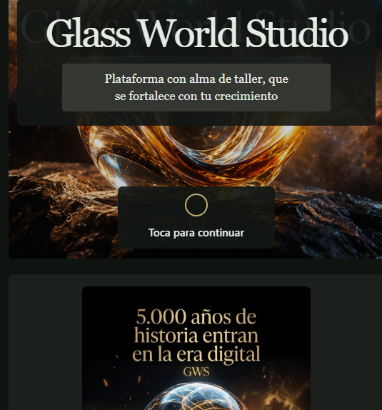
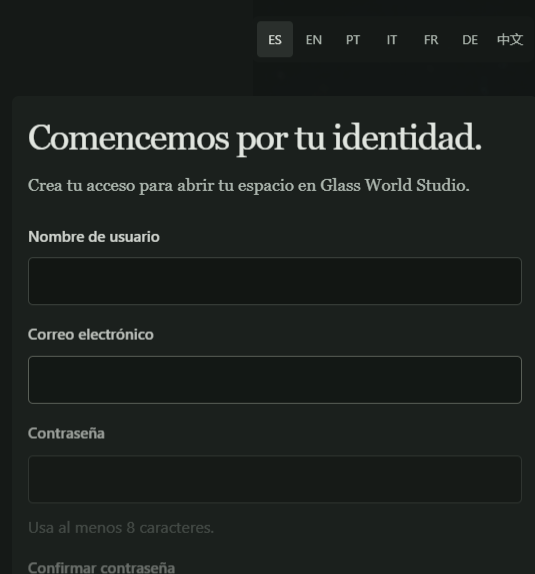
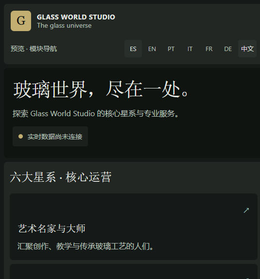

/ · WelcomeCover
Portada de bienvenida
Identidad, arte principal, selector de idioma y acceso al Umbral. El aviso de privacidad se aceptó para la captura.
Glass World Studio · Monoplaza UI
Capturas del build de producción local de la interfaz construida en VS Code. La app se validó con typecheck y build; esta página deja una referencia visual fija para revisión.
Esta es una galería estática de auditoría visual. El runtime interactivo de Next.js se ejecutó y validó localmente; GitHub Pages no ejecuta el servidor Next.js.

/ · WelcomeCover
Identidad, arte principal, selector de idioma y acceso al Umbral. El aviso de privacidad se aceptó para la captura.

/umbral · Umbral de suscripción
Formulario de registro, selector de idioma y estados de validación local. No crea cuentas reales.

/inicio · Hub de galaxias
Navegación principal del marketplace, módulos de galaxia y aviso explícito de que los datos en vivo no están conectados.